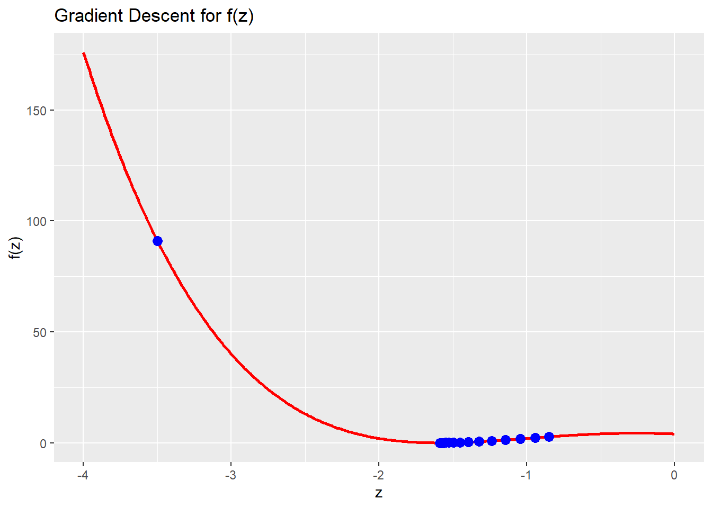
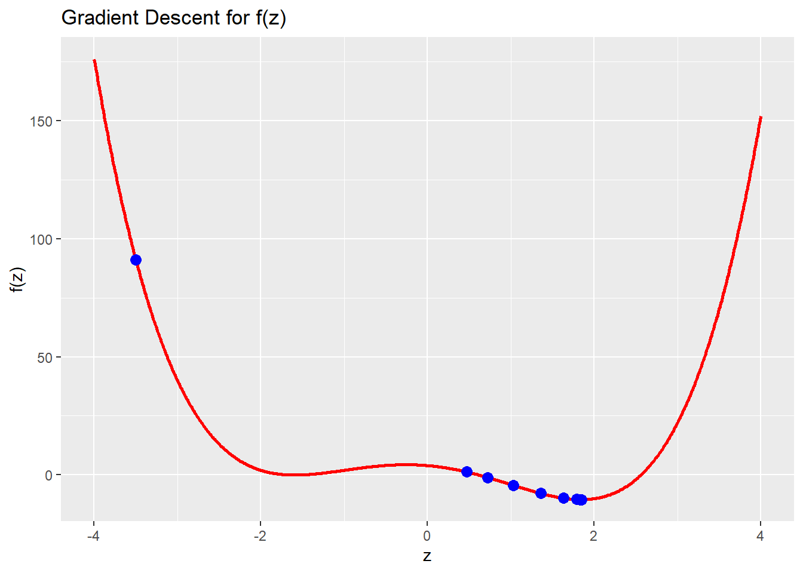
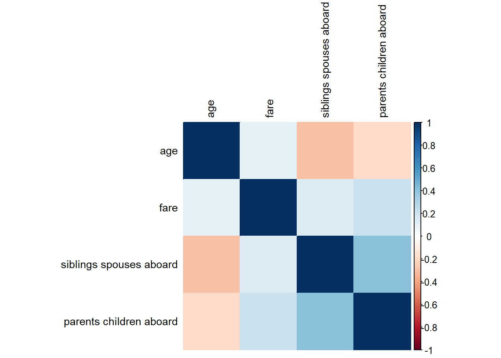
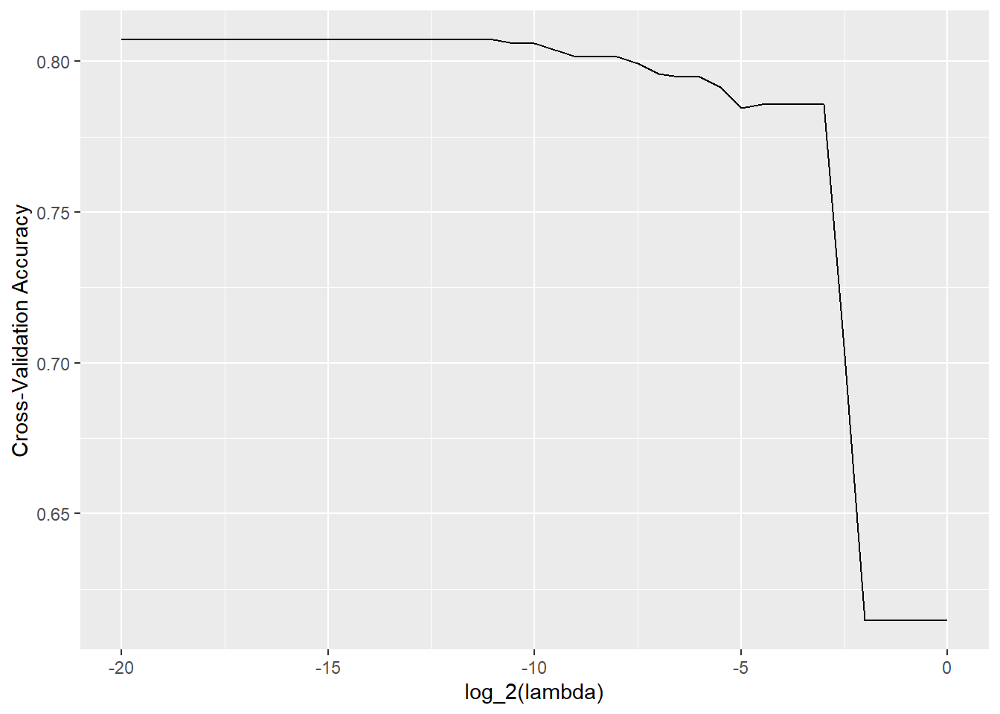

Installing dplyr [1.1.1] ...
OK [linked cache in 3.4 milliseconds]
Installing readr [2.1.4] ...
OK [linked cache in 2.8 milliseconds]
Installing purrr [1.0.1] ...
OK [linked cache in 2.8 milliseconds]
Installing stringr [1.5.0] ...
OK [linked cache in 2.7 milliseconds]
Installing tidyr [1.3.0] ...
OK [linked cache in 3.6 milliseconds]
Installing corrplot [0.92] ...
OK [linked cache in 3 milliseconds]
Installing nnet [7.3-18] ...
OK [linked cache in 2.9 milliseconds]
Installing broom [1.0.4] ...
OK [linked cache in 3.1 milliseconds]
Installing car [3.1-2] ...
OK [linked cache in 22 milliseconds]
Installing caret [6.0-94] ...
OK [linked cache in 3.4 milliseconds]
Installing torch [0.9.1] ...
OK [linked cache in 3.4 milliseconds]
sapply(packages, require, character.only=T)
Loading required package: dplyr
Attaching package: 'dplyr'
The following objects are masked from 'package:stats':
filter, lag
The following objects are masked from 'package:base':
intersect, setdiff, setequal, union
Loading required package: readr
Loading required package: tidyr
Loading required package: purrr
Loading required package: stringr
Loading required package: corrplot
corrplot 0.92 loaded
Loading required package: car
Loading required package: carData
Attaching package: 'car'
The following object is masked from 'package:purrr':
some
The following object is masked from 'package:dplyr':
recode
Loading required package: caret
Loading required package: ggplot2
Loading required package: lattice
Attaching package: 'caret'
The following object is masked from 'package:purrr':
lift
Using your answer from above, what is the answer to \[
\frac{d}{dx}g(x, y) \Bigg|_{(x=3, y=4)} = 0 \quad \text{and} \quad \frac{d}{dy}g(x, y) \Bigg|_{(x=3, y=4)} = 0
\]
Define \(g(x, y)\) as a function in R, compute the gradient of \(g(x, y)\) with respect to \(x=3\) and \(y=4\). Does the answer match what you expected?
The answer I got from the computed gradient in R is (0,0), which matches the values I got when I did the partial derivatives of the equation, so the answer I got is what I expected.
Define \(h(\u, \v)\) as a function in R, initialize the two vectors \(\u\) and \(\v\) as torch_tensors. Compute the gradient of \(h(\u, \v)\) with respect to \(\u\). Does the answer match what you expected?
h <-function(u,v){ (torch_dot(u,v))^3}u <-torch_tensor(c(-1,1,-1,1,-1,1,-1,1,-1,1), requires_grad =TRUE)v <-torch_tensor(c(-1,-1,-1,-1,-1,1,1,1,1,1), requires_grad =TRUE)result <-h(u,v)result$backward()u$grad
# initializing parameters to be used for the function z <--3.5n <-100eta <-0.02z_values <-c(z)for (i in1:n) {# updates derivative each iteration & finds new z value, adding it to array deriv <-4*z^3-12*z -3 z <- z - eta * deriv z_values <-c(z_values, z)}
Plot the curve \(f\) and add taking \(\eta = 0.02\), add the points \(\{z_0, z_1, z_2, \dots z_{100}\}\) obtained using gradient descent to the plot. What do you observe?
# creating a x-axis boundaryx_values <-seq(-4,0, by =0.01)# finding y-values for those x values (finding f(x) for function f above)y_values <-f(x_values)# creating data frames to store the function values and the gradient desc valuesdf_f <-data.frame(x = x_values, y = y_values)df_z <-data.frame(x = z_values, y =f(z_values))ggplot() +# red line showing the actual curve of the line geom_line(data = df_f, aes(x=x, y=y), color ='red', size =1) +# blue points showing the value after each iteration of gradient descentgeom_point(data = df_z, aes(x=x, y=y), color ='blue', size =3) +xlab('z') +ylab('f(z)') +ggtitle('Gradient Descent for f(z)')
Warning: Using `size` aesthetic for lines was deprecated in ggplot2 3.4.0.
ℹ Please use `linewidth` instead.

I observe that there is a quick decrease in the gradient descent after the first iteration. After that though, that it moves closer and closer to the local minimum, so the ‘gap’ or space from one iteration to the next gets smaller and smaller. This value only actually finds the local minimum of the function as after that first iteration, gradient descent ‘tells’ it to go left as it has a positive slope at that spot. Based on the fact that it started with a negative slope and ended up with a positive slope after the first iteration, it knows that there is some point in between those 2 points that has a slope of 0 (is a local minimum). Based on the gradient descent performed, I can conclude that the local minimum is at around a z value of -1.6 and has a f(z) value of 0.
1.5 (5 points)
Redo the same analysis as Question 1.4, but this time using \(\eta = 0.03\). What do you observe? What can you conclude from this analysis
# initializing parameters to be used for the function z <--3.5n <-100eta <-0.03z_values <-c(z)for (i in1:n) {# updates derivative each iteration & finds new z value, adding it to array deriv <-4*z^3-12*z -3 z <- z - eta * deriv z_values <-c(z_values, z)}# creating a x-axis boundaryx_values <-seq(-4,4, by =0.01)# finding y-values for those x values (finding f(x) for function f above)y_values <-f(x_values)# creating data frames to store the function values and the gradient desc valuesdf_f <-data.frame(x = x_values, y = y_values)df_z <-data.frame(x = z_values, y =f(z_values))ggplot() +# red line showing the actual curve of the line geom_line(data = df_f, aes(x=x, y=y), color ='red', size =1) +# blue points showing the value after each iteration of gradient descentgeom_point(data = df_z, aes(x=x, y=y), color ='blue', size =3) +xlab('z') +ylab('f(z)') +ggtitle('Gradient Descent for f(z)')

When changing the value of eta from 0.02 to 0.03, we are then able to find the global minimum of the function. This is different from the last use of gradient descent with eta=0.02 because after the first iteration, there is still a negative slope, so it keeps moving to the right to see if there is a minimum. The distance between the z values gets smaller and smaller with each iteration of gradient descent. It converges to a global minimum at a z value of about 1.9, with a f(z) value of about -10.
Question 2
50 points
Logistic regression and interpretation of effect sizes
For this question we will use the Titanic dataset from the Stanford data archive. This dataset contains information about passengers aboard the Titanic and whether or not they survived.
2.1 (5 points)
Read the data from the following URL as a tibble in R. Preprocess the data such that the variables are of the right data type, e.g., binary variables are encoded as factors, and convert all column names to lower case for consistency. Let’s also rename the response variable Survival to y for convenience.
url <-"https://web.stanford.edu/class/archive/cs/cs109/cs109.1166/stuff/titanic.csv"df <-read.csv(url)# changing column name of 'Survived'colnames(df)[colnames(df) =='Survived'] <-'y'# getting rid of . in the column namescolnames(df)[colnames(df)=='Siblings.Spouses.Aboard']<-'Siblings Spouses Aboard'colnames(df)[colnames(df)=='Parents.Children.Aboard']<-'Parents Children Aboard'# converting all the column names to lower casecolnames(df) <-tolower(colnames(df))# changing the y (survived) and sex to factorsdf$y <-as.factor(df$y)df$sex <-as.factor(ifelse(df$sex =='male', 1, 0))# converting pclass to factor too even though not a binary variable# makes more sense when interpreting slopedf$pclass <-as.factor(df$pclass)
2.2 (5 points)
Visualize the correlation matrix of all numeric columns in df using corrplot()
# keeping only numeric valuesdfCorr <- df %>%keep(is.numeric) %>%cor()# creating corrplotcorrplot(dfCorr, method ='color', tl.cex =0.9, tl.col ='black', order ='hclust')

2.3 (10 points)
Fit a logistic regression model to predict the probability of surviving the titanic as a function of:
pclass
sex
age
fare
# siblings
# parents
full_model <-glm(y ~ pclass + sex + age +`siblings spouses aboard`+`parents children aboard`+ fare, data = df, family =binomial())summary(full_model)
Call:
glm(formula = y ~ pclass + sex + age + `siblings spouses aboard` +
`parents children aboard` + fare, family = binomial(), data = df)
Deviance Residuals:
Min 1Q Median 3Q Max
-2.7773 -0.5991 -0.3984 0.6131 2.4412
Coefficients:
Estimate Std. Error z value Pr(>|z|)
(Intercept) 4.109777 0.463602 8.865 < 2e-16 ***
pclass2 -1.161491 0.300960 -3.859 0.000114 ***
pclass3 -2.350022 0.304666 -7.713 1.22e-14 ***
sex1 -2.756710 0.200642 -13.739 < 2e-16 ***
age -0.043410 0.007790 -5.573 2.51e-08 ***
`siblings spouses aboard` -0.401572 0.110795 -3.624 0.000290 ***
`parents children aboard` -0.106884 0.118767 -0.900 0.368151
fare 0.002823 0.002468 1.144 0.252771
---
Signif. codes: 0 '***' 0.001 '**' 0.01 '*' 0.05 '.' 0.1 ' ' 1
(Dispersion parameter for binomial family taken to be 1)
Null deviance: 1182.77 on 886 degrees of freedom
Residual deviance: 780.93 on 879 degrees of freedom
AIC: 796.93
Number of Fisher Scoring iterations: 5
2.4 (30 points)
Provide an interpretation for the slope and intercept terms estimated in full_model in terms of the log-odds of survival in the titanic and in terms of the odds-ratio (if the covariate is also categorical).
Recall the definition of logistic regression from the lecture notes, and also recall how we interpreted the slope in the linear regression model (particularly when the covariate was categorical).
The intercept term of 4.109777 means that if all the covariates are held constant, using log-odds, we can determine that the odds of survival is \(\exp(4.109777)\) or about 60.93 times greater than the odds of not surviving when all the other variables are held constant
The next covariates is pclass, which is categorical. Since its a categorical variable, we had to set a baseline value for this covariates, which in this case, we used pclass of 1 as the baseline, so the slopes for pclass2 and pclass3 are based off pclass1. For pclass2, the slope value is -1.161491, so plugging that into log-odds we get that the odds of survival is about 0.313 times greater for people of class 2 compared to class 1 (higher chance of surviving at pclass1 than pclass2). For pclass3, the slope value is -2.35, so the odds of survival for someone in class 3 is 0.095 times greater than someone in class 1, so someone in class 1 has a much better chance of survival than someone in class 3.
The next covariate is sex, which is categorical. The baseline value for this covariate is female (as female is labeled as 0, and male 1 in the data frame). Using this, and the slope of sex1 being -2.7567, a male is 0.0635 times more likely to survive than a female, which makes sense as women were given a spot in the lifeboats first.
The age covariate has a slope value of -0.043410. From this, we can determine that an increase in age by 1, while holding all other covariates constant, the odds of survival is about 0.95 times as likely. So, as age increases, the odds of survival go down slightly.
For ‘siblings spouses aboard’, the slope value of -0.401572 indicates that for an increase in siblings spouses aboard by 1 (while holding other covariates constant), the odds of surviving is 0.669 times as likely, so as this value increases, your survival odds goes down.
For ‘parents children aboard’, the slope value of -0.106884 indicates that for an increase in parents children aboard by 1 (while holding other covariates constant), the odds of surviving is about 0.9 times as likely, so once again, as the amount of parents children aboard goes up for an individual, the survival odds goes down.
For the fare covariate, the slope value is 0.002823, so as the fare increases by 1, while holding other covariates constant, the odds of survival is about 0.99 times as likely, so as fare increases, an individuals odds of survival decrease slightly.
Question 3
70 points
Variable selection and logistic regression in torch
3.1 (15 points)
Complete the following function overview which takes in two categorical vectors (predicted and expected) and outputs:
and making sure that the accuracy is \(100\%\) while the errors are \(0\%\).
3.2 (5 points)
Display an overview of the key performance metrics of full_model
# getting predictions on the survival of Titanic passengers predictions <-predict(full_model, type ='response')predictions <-ifelse(predictions >=0.5, 1, 0)# getting expected value for survival (survived = 1, died = 0)expected <- df$y# using overview func we created to see key performance metrics of full_modelfullModel_overview <-overview(predictions, expected)fullModel_overview
Using backward-stepwise logistic regression, find a parsimonious altenative to full_model, and print its overview
# creating null model which backwards stepwise logistic regression will end atnull_model <-glm(y ~1, df, family =binomial())# creating the backwards stepwise logistic regression modelstep_model <-step(full_model, direction ='backward', scope =formula(null_model))
Start: AIC=796.93
y ~ pclass + sex + age + `siblings spouses aboard` + `parents children aboard` +
fare
Df Deviance AIC
- `parents children aboard` 1 781.75 795.75
- fare 1 782.37 796.37
<none> 780.93 796.93
- `siblings spouses aboard` 1 796.79 810.79
- age 1 815.20 829.20
- pclass 2 847.84 859.84
- sex 1 1020.26 1034.26
Step: AIC=795.75
y ~ pclass + sex + age + `siblings spouses aboard` + fare
Df Deviance AIC
- fare 1 782.82 794.82
<none> 781.75 795.75
- `siblings spouses aboard` 1 801.56 813.56
- age 1 815.88 827.88
- pclass 2 852.19 862.19
- sex 1 1024.08 1036.08
Step: AIC=794.82
y ~ pclass + sex + age + `siblings spouses aboard`
Df Deviance AIC
<none> 782.82 794.82
- `siblings spouses aboard` 1 801.59 811.59
- age 1 818.25 828.25
- pclass 2 900.80 908.80
- sex 1 1031.69 1041.69
summary(step_model)
Call:
glm(formula = y ~ pclass + sex + age + `siblings spouses aboard`,
family = binomial(), data = df)
Deviance Residuals:
Min 1Q Median 3Q Max
-2.7637 -0.5883 -0.3930 0.6136 2.4543
Coefficients:
Estimate Std. Error z value Pr(>|z|)
(Intercept) 4.294169 0.417879 10.276 < 2e-16 ***
pclass2 -1.321703 0.268452 -4.923 8.5e-07 ***
pclass3 -2.541237 0.258324 -9.837 < 2e-16 ***
sex1 -2.738024 0.195796 -13.984 < 2e-16 ***
age -0.043918 0.007757 -5.662 1.5e-08 ***
`siblings spouses aboard` -0.409624 0.105495 -3.883 0.000103 ***
---
Signif. codes: 0 '***' 0.001 '**' 0.01 '*' 0.05 '.' 0.1 ' ' 1
(Dispersion parameter for binomial family taken to be 1)
Null deviance: 1182.77 on 886 degrees of freedom
Residual deviance: 782.82 on 881 degrees of freedom
AIC: 794.82
Number of Fisher Scoring iterations: 5
# creating predictions based on the backward stepwise logistic regression modelstep_predictions <-predict(step_model, type ='response')# ifelse statement to classify the predictions since they are currently decimalsstep_predictions <-ifelse(step_predictions >=0.5, 1, 0)stepwise_overview <-overview(step_predictions, df$y)stepwise_overview
Using the caret package, setup a \(5\)-fold cross-validation training method using the caret::trainConrol() function
controls <-trainControl(method ='cv', number =5)
Now, using control, perform \(5\)-fold cross validation using caret::train() to select the optimal \(\lambda\) parameter for LASSO with logistic regression.
Take the search grid for \(\lambda\) to be in \(\{ 2^{-20}, 2^{-19.5}, 2^{-19}, \dots, 2^{-0.5}, 2^{0} \}\).
lasso_fit <-train( y ~ pclass + sex + age +`siblings spouses aboard`+`parents children aboard`+ fare,data = df,method ='glmnet',trControl = controls, tuneGrid =expand.grid(alpha =1,lambda =2^seq(-20, 0, by =0.5) ),standardize =TRUE,family ='binomial')
Using the information stored in lasso_fit$results, plot the results for
cross-validation accuracy vs. \(log_2(\lambda)\). Choose the optimal \(\lambda^*\), and report your results for this value of \(\lambda^*\).
# plotting the log2(lambda) values vs accuracy to find optimal lambdalasso_fit$results %>%ggplot() +geom_line(aes(x =log2(lambda), y = Accuracy)) +xlab('log_2(lambda)') +ylab('Cross-Validation Accuracy')

# showing where max accuracy is & the associated lambda (the optimal lambda)lasso_fit$results %>%filter(Accuracy ==max(lasso_fit$results$Accuracy))
Based on this plot, the value of log_2(lambda) that gives the highest cross-validation accuracy is around -8. The table created, gives the row of data for the highest accuracy value in the lasso_fit$results table. Based on this we can see that the highest accuracy is about 79% and comes from a lambda value of 0.00390625. This checks out with the graph since log2(0.00390625.) is about -8, so the optimal lambda is 0.00390625.
# creating predictions based on lambda modellasso_predictions <-predict(lasso_fit)lasso_overview <-overview(lasso_predictions ,df$y)lasso_overview
First, use the model.matrix() function to convert the covariates of df to a matrix format
covariate_matrix <-model.matrix(full_model)[, -1]
Now, initialize the covariates \(X\) and the response \(y\) as torch tensors
X <-torch_tensor(covariate_matrix, dtype =torch_float())y <-torch_tensor(df$y, dtype =torch_float())
Using the torch library, initialize an nn_module which performs logistic regression for this dataset. (Remember that we have 6 different covariates)
logistic <-nn_module(initialize =function() {# need 7 in the linear layer because pclass is being used as a factor self$f <-nn_linear(7,1) self$g <-nn_sigmoid() },forward =function(x) { x %>% self$f() %>% self$g() })f <-logistic()
You can verify that your code is right by checking that the output to the following code is a vector of probabilities:
Now, define the loss function Loss() which takes in two tensors X and y and a function Fun, and outputs the Binary cross Entropy loss between Fun(X) and y.
Loss <-function(X, y, Fun){nn_bce_loss()(Fun(X), y)}
Initialize an optimizer using optim_adam() and perform \(n=1000\) steps of gradient descent in order to fit logistic regression using torch.
f <-logistic()optimizer <-optim_adam(f$parameters, lr =0.01)n <-1000for (i in1:n){ loss <-Loss(X, y, f) optimizer$zero_grad() loss$backward() optimizer$step()if (i %%100==0) {cat(sprintf('Epoch: %d, Loss: %.6f\n', i, loss$item())) }}
Create a summary table of the overview() summary statistics for each of the \(4\) models we have looked at in this assignment, and comment on their relative strengths and drawbacks.
The overviews from the full model, stepwise regression formula and lasso regression are nearly identical in terms of their accuracy (~80%), error(~20%), false positive rate (~13%) and false negative rate (ranging from 29%-31%). So these models are decently accurate and what might be considered a good false positive rate, but it has a drawback of incorrectly predicting people to die when they actually survived (false_negative_rate). The torch model fared much worse in all performance metrics except false negative rate. The torch model is only predicting the survival of a passenger about 38% of the time, and 100% of the time it is incorrectly predicting that someone survived when they actually died. The only strength of the torch model is that it never predicted someone to die when they actually survived.
Session Information
Print your R session information using the following command